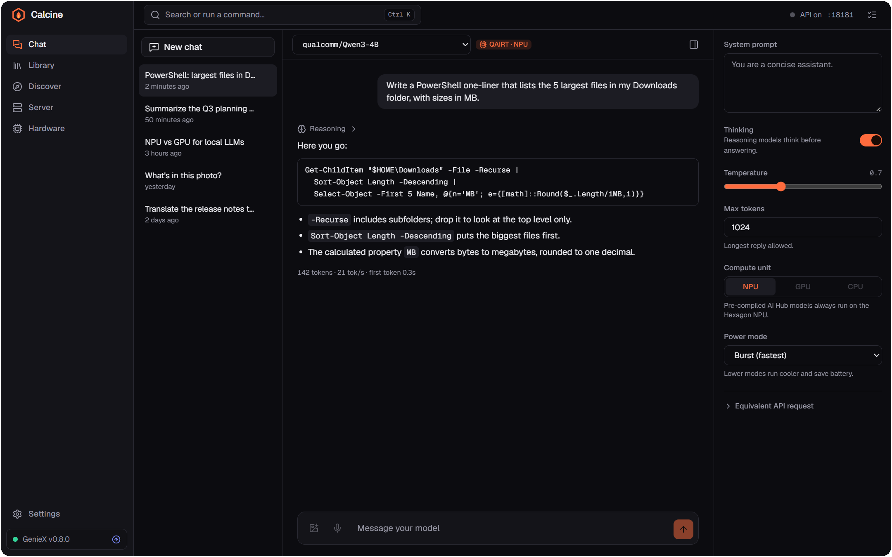
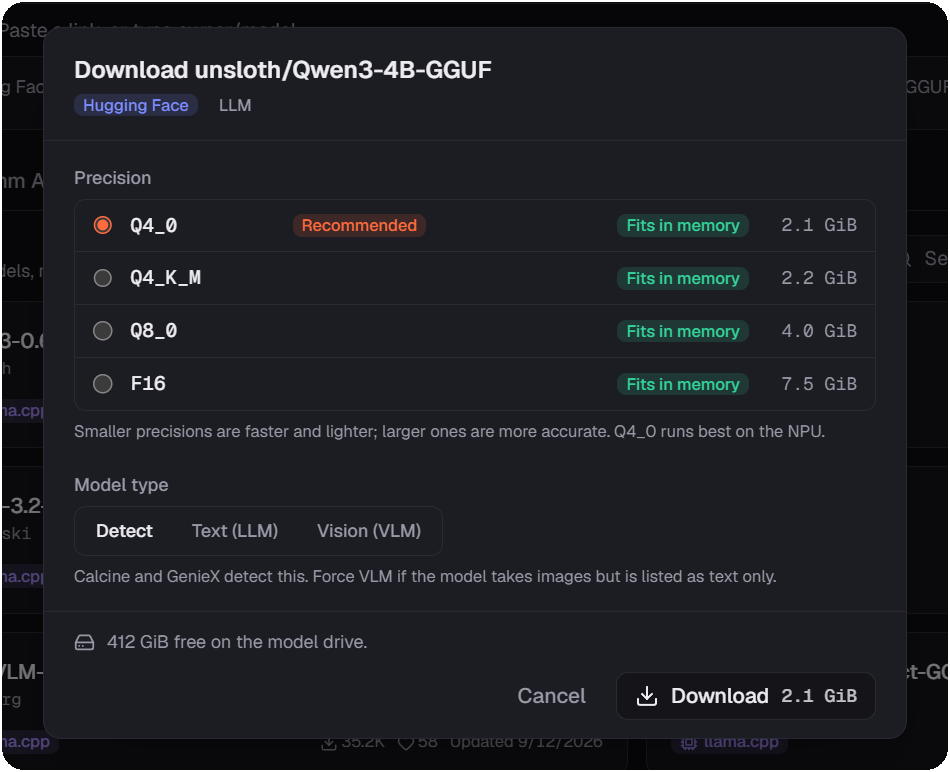
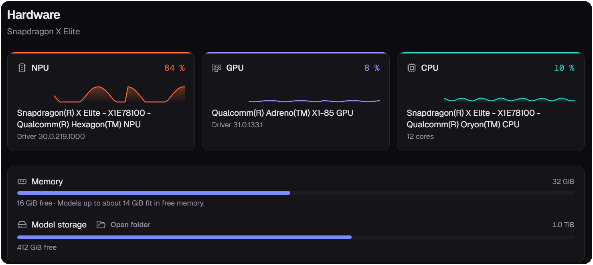
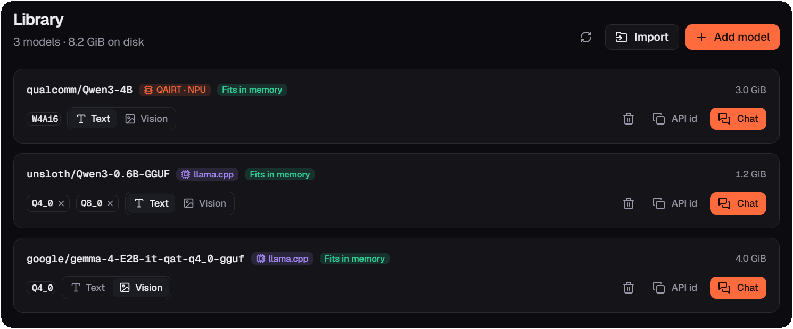
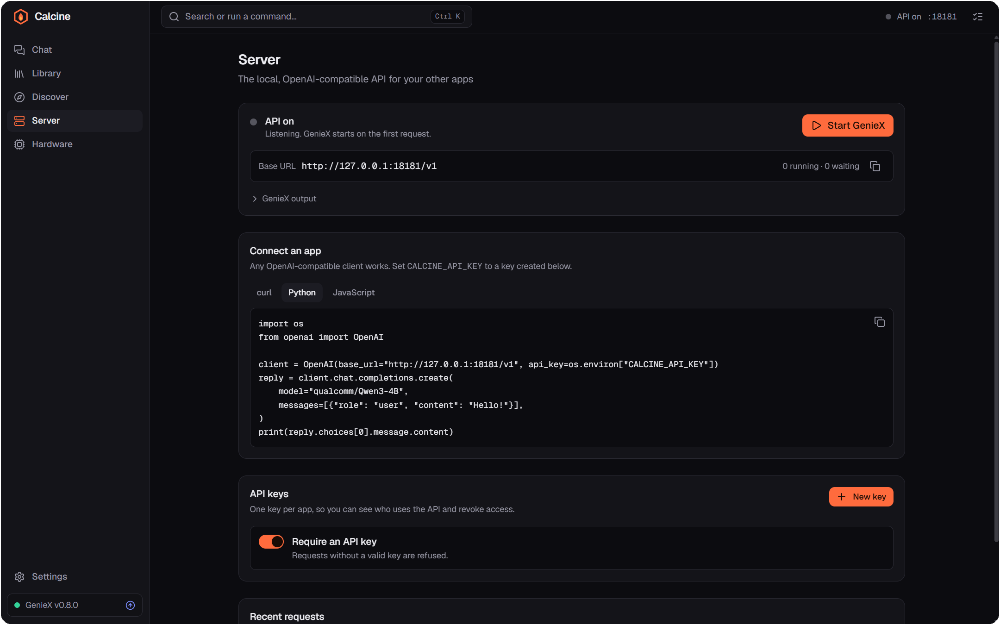

Chat with every option
Thinking, temperature, power mode, compute unit: settings adapt to each model's runtime. Streams with tokens per second.
Free & open source · Windows 11 on Snapdragon
Calcine is a desktop app for Qualcomm GenieX. Download language models, chat with them on the Hexagon NPU, and give every app on your PC a secure, OpenAI-compatible API. Nothing leaves your machine.
Windows 11 ARM64 · GenieX included

Everything GenieX does, in one window
Calcine wraps every GenieX command in a friendly interface, then adds what a CLI can't: a live view of your hardware, a model browser that knows your chip, and an API you can safely hand to other apps.
Thinking, temperature, power mode, compute unit: settings adapt to each model's runtime. Streams with tokens per second.
Attach pictures or dictate to vision models. Attachments stay in memory, out of your saved conversations.
Browse Qualcomm AI Hub for your chipset and search Hugging Face, with precisions, sizes, memory and disk checks.
Live NPU, GPU, CPU and memory load, drivers, and a self-test that compares speed on each unit.
On 127.0.0.1:18181, GenieX's default port. Per-app keys, a request queue and a request log.
GenieX ships in the installer and updates, or rolls back, from the app. Calcine updates itself with signed packages.
Discover
Calcine lists AI Hub models compiled for your exact chipset and searches Hugging Face for GGUF models. For each precision it shows the size and whether it fits in free memory and on disk, and recommends the one that runs best on the NPU.

Hardware
Live load for the Hexagon NPU, Adreno GPU and Oryon CPU, read from Windows performance counters while a model generates. Run a self-test to see which unit is fastest for a given model.

Library
Every installed model with its runtime, precisions and size. Switch a model between text and vision, copy its API id, or open a chat in one click.

Local API
Create a key per app in Server › API keys, then use the OpenAI SDK you already know. Streaming, vision and reasoning work as they do in the cloud, except everything runs on this PC.
from openai import OpenAI
client = OpenAI(
base_url="http://127.0.0.1:18181/v1",
api_key="calcine_…", # Server › API keys
)
stream = client.chat.completions.create(
model="qualcomm/Qwen3-4B",
messages=[{"role": "user", "content": "Hello from my NPU!"}],
stream=True,
)
for chunk in stream:
print(chunk.choices[0].delta.content or "", end="")import OpenAI from "openai";
const client = new OpenAI({
baseURL: "http://127.0.0.1:18181/v1",
apiKey: process.env.CALCINE_API_KEY, // Server › API keys
});
const stream = await client.chat.completions.create({
model: "qualcomm/Qwen3-4B",
messages: [{ role: "user", content: "Hello from my NPU!" }],
stream: true,
});
for await (const chunk of stream) {
process.stdout.write(chunk.choices[0]?.delta?.content ?? "");
}curl http://127.0.0.1:18181/v1/chat/completions \
-H "Authorization: Bearer $CALCINE_API_KEY" \
-H "Content-Type: application/json" \
-d '{
"model": "qualcomm/Qwen3-4B",
"messages": [{"role": "user", "content": "Hello from my NPU!"}]
}'
Secure by default
geniex serve has no authentication and accepts any web origin. Calcine never
exposes it: it runs on a hidden loopback port, and every request goes through a gateway
that checks, in order:
Listens on 127.0.0.1. Other machines on your network can't reach it.
Blocks DNS rebinding, where a web page points its domain at 127.0.0.1.
Web pages can't call the API from your browser unless you allow their origin.
Shown once, stored as SHA-256 fingerprints, revocable instantly, scoped to inference or management.
Local file paths and internal URLs in requests are refused, so apps can't make GenieX read your files.
A Windows Job Object stops GenieX with Calcine, even after a crash. Nothing is left listening.
Signed updates, verified GenieX installers, and an SBOM with build provenance on every stable release. Read the security model
Windows 11 ARM64 · GenieX included
Calcine isn't code-signed yet: Windows SmartScreen asks for confirmation before installing (More info › Run anyway).
Windows 11 on Arm with a Snapdragon processor that GenieX supports, such as the Snapdragon X Elite and X Plus. Linux on ARM64 is planned.
No. Models run locally, the API only listens on this PC, and conversations are stored on this PC only. Calcine connects to the internet to download models and check for updates, and that's it: no telemetry.
No. GenieX is bundled in the installer. You can update it, switch to pre-releases, or roll back from Hardware › GenieX runtime.
Qualcomm AI Hub models pre-compiled for the NPU, and GGUF models from Hugging Face run by llama.cpp on the NPU, GPU or CPU. Both text (LLM) and vision (VLM) models are supported.
geniex serve. Will my apps still work?Yes. Calcine listens on GenieX's default port, 18181, with the same OpenAI-compatible routes. Add an API key to your client, or turn off "Require an API key" for clients that can't send one.
No. Calcine is an independent open-source project under the MIT license. It redistributes GenieX under its BSD 3-Clause license.